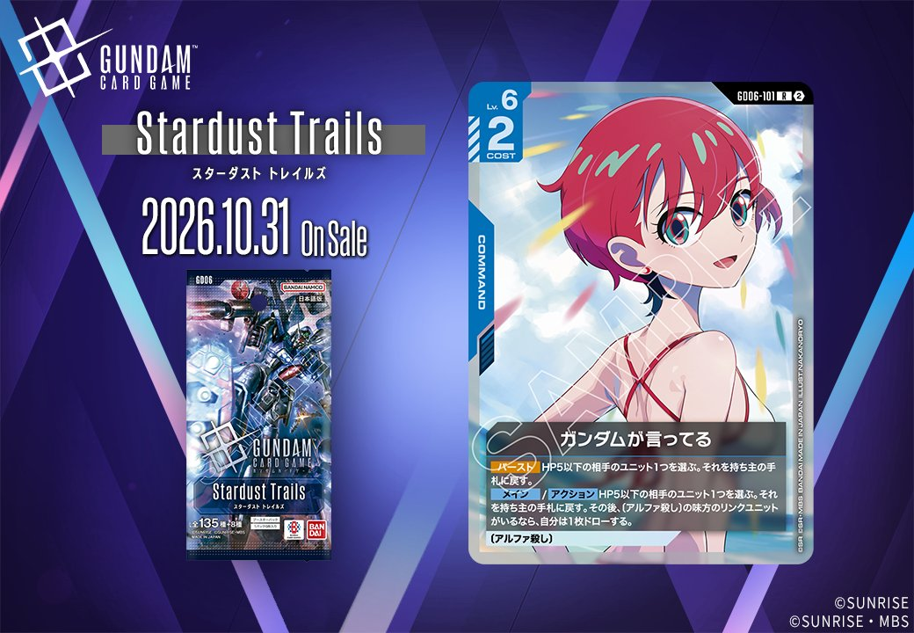
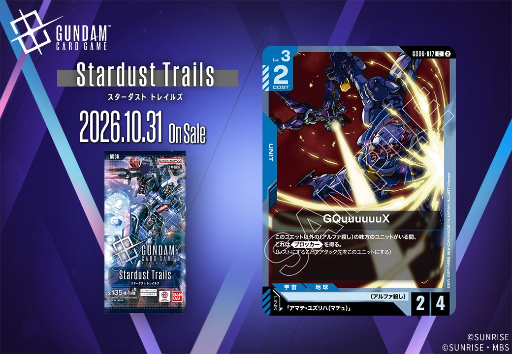
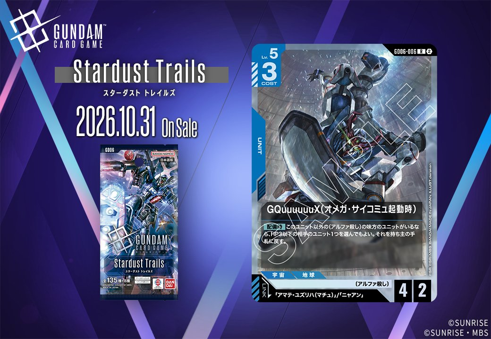
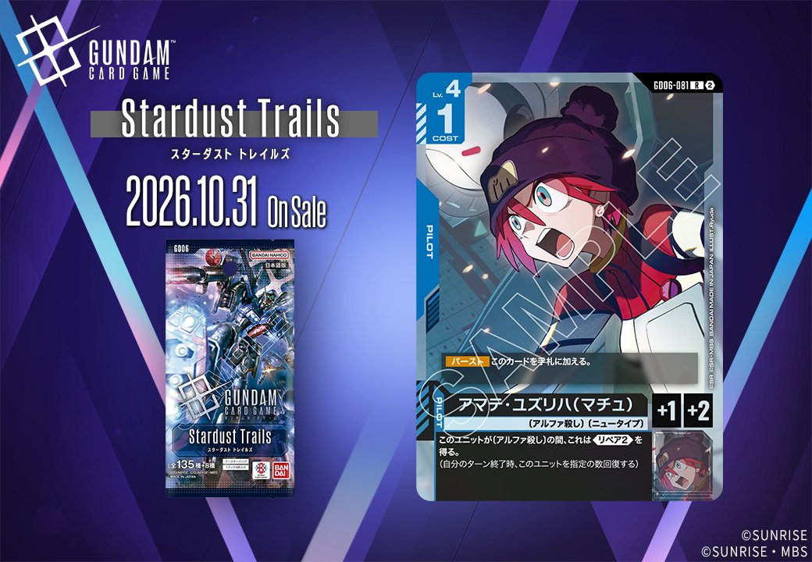
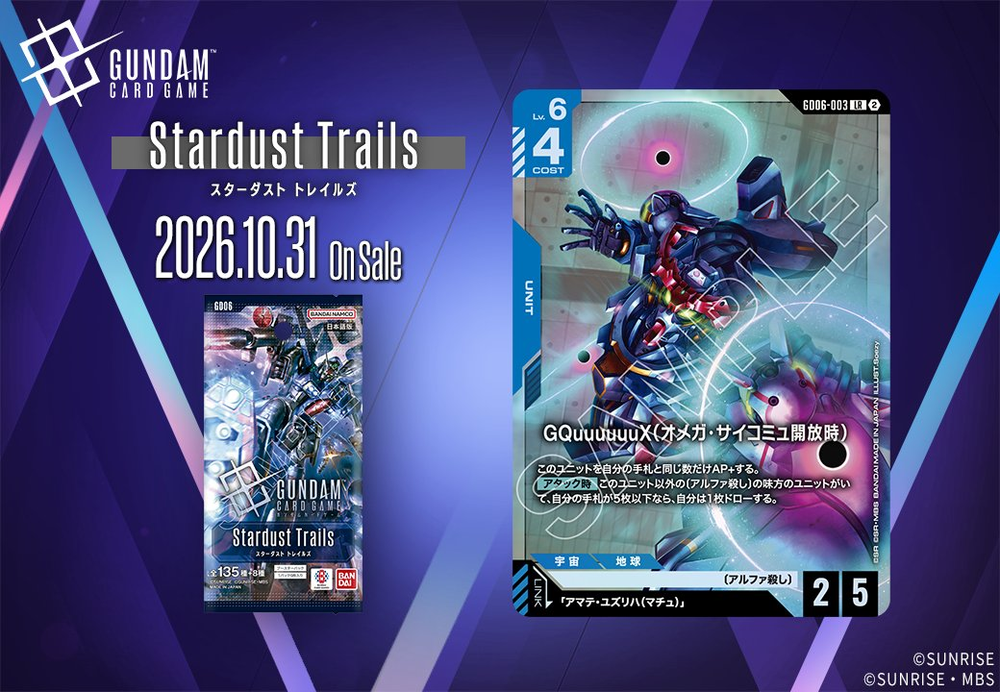

2026年10月31日発売のGD06「Stardust Trails」から、新カード2枚を紹介します。2枚とも色は青で、一方は「アマテ・ユズリハ(マチュ)」をリンク条件に指定する UNIT「GQuuuuuuX」(GD06-017)、もう一方は COMMAND「ガンダムが言ってる」(GD06-101)です。タイプの異なる2枚を、1枚ずつ見ていきましょう。

ガンダムが言ってる (GD06-101)
| 色 | 青 | タイプ | COMMAND |
| Lv | 6 | コスト | 2 |
効果: 【バースト】HP5以下の相手のユニット1つを選ぶ。それを持ち主の手札に戻す。【メイン】/【アクション】HP5以下の相手のユニット1つを選ぶ。それを持ち主の手札に戻す。その後、〔アルファ殺し〕の味方のリンクユニットがいるなら、自分は1枚ドローする。(アルファ殺し)
「ガンダムが言ってる」は、HP5以下の相手ユニット1つを持ち主の手札に戻す青のコマンドです。コスト2と軽い反面Lv.6を要求するため、【メイン】/【アクション】で撃てるのは中盤以降になります。【アクション】でも使えるので、相手ターン中に対象を手札へ退かす運用も可能です。〔アルファ殺し〕の味方リンクユニットがいれば1枚ドローが付き、手札を減らさずに処理できます。【バースト】にも同じ効果があり、序盤にシールドから出ても無駄になりません。アムロ・レイ(ST01-010)の【セット時】と対象範囲が同じHP5以下なので、レストにするか手札に戻すかを状況で選べるでしょう。

GQuuuuuuX (GD06-017)
| 色 | 青 | タイプ | UNIT |
| Lv | 3 | コスト | 2 |
| AP | 2 | HP | 4 |
| 特徴 | 〔アルファ殺し〕 | ||
| リンク条件 | 「アマテ・ユズリハ(マチュ)」 | ||
効果: このユニット以外の〔アルファ殺し〕の味方のユニットがいる間、これは《ブロッカー》を得る。(レストにすることでアタック先をこのユニットにする)
GD06のGQuuuuuuX (GD06-017)は、Lv.3・コスト2でAP2/HP4のユニットです。自分以外に〔アルファ殺し〕を持つ味方のユニットがいる間だけ《ブロッカー》を得るため、同じ特徴のユニットを並べて初めて守りの役割を担えます。コスト2ながらHP4あるので、ブロックしたときに倒されにくい点が利点になります。一方、条件となる味方が場を離れると《ブロッカー》は失われ、単体ではAP2の小型ユニットにとどまります。リンクは「アマテ・ユズリハ(マチュ)」で、〔アルファ殺し〕のユニットを複数入れたうえで、このパイロットも合わせて採用する構築で使うことになるでしょう。
関連カード
-
 覚悟の表れ(GD01-100)青系デッキ内採用率48.8% (3906デッキ)
覚悟の表れ(GD01-100)青系デッキ内採用率48.8% (3906デッキ) -
 アムロ・レイ(ST01-010)青系デッキ内採用率45% (3604デッキ)
アムロ・レイ(ST01-010)青系デッキ内採用率45% (3604デッキ) -
 ガンダム(ST01-001)青系デッキ内採用率41.8% (3351デッキ)
ガンダム(ST01-001)青系デッキ内採用率41.8% (3351デッキ) -
 ガンタンク(GD01-008)青系デッキ内採用率29.6% (2370デッキ)
ガンタンク(GD01-008)青系デッキ内採用率29.6% (2370デッキ) -
 コルシカ基地(ST02-016)青系デッキ内採用率27.2% (2181デッキ)
コルシカ基地(ST02-016)青系デッキ内採用率27.2% (2181デッキ) -

GQuuuuuuX（オメガ・サイコミュ起動時）(GD06-006)NEW青系 — 同色・共通特徴: アルファ殺し（新カード） -

アマナ・ユズリハ(マチュ)(GD06-081)NEW青系 — 同色・共通特徴: アルファ殺し（新カード） -

νガンダム(オメガ・サイコミュ開放時)(GD06-003)NEW青系 — 同色・共通特徴: アルファ殺し（新カード）